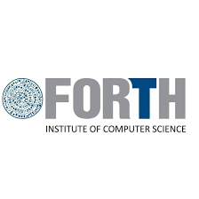

Ntenis Sampani
Profile
Motivated Computer Science student with a strong foundation in programming, algorithms, and software development. Eager to apply technical skills in real-world applications and contribute effectively to a professional team.
Education
University of Crete, Heraklion
B.Sc. in Computer Science (2020 – Expected July 2025) | GPA: 7.1
Internship

FORTH, Heraklion (July 2024 – September 2024)
- Developed a concurrent system optimizing data structure access time.
- Implemented parallel processing techniques to improve efficiency.
- Worked with C and MPI concurrency frameworks.
Technical Skills
- Programming Languages: C, C++, Java, Python
- Web Development: JavaScript, React
- Databases: SQL, MongoDB
- Tools & Technologies: Git, Docker, Linux
Projects
- Multithreaded Airline Reservation System: Developed a thread-safe flight booking and cancellation system in C using Pthreads.
- Web App: Built a JavaScript-based platform for real-time emergency tracking and resource management.
- Reservation System: Java-based app with MySQL and Swing/Servlets for browsing events and managing concert ticket bookings.
- Board Game: Final OOP course project — implemented the classic board game in Java with object-oriented design.
Relevant Coursework
- Data Structures and Algorithms
- Object-Oriented Programming
- Operating Systems
- Database Management Systems
- Network Security